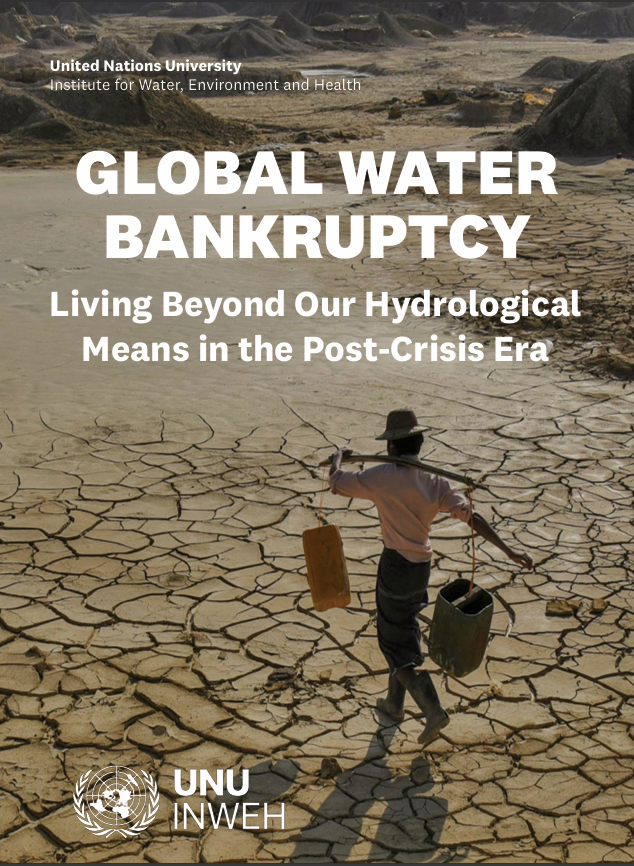

Energy Crisis
Global Water Bankruptacy
Water is a foundational pillar of human development and planetary stability. Unfortunately, 2.2 billion people lack safely managed drinking water, and the problem has only been made worse by “water-hungry extractive industries, water demanding electricity generation plants and thirsty data centres”
this is due data centres huge electricity demand “Data centres accounted for around 1% or 2% of global electricity demand in 2020.” All of the power being generated needs to be cooled and while some companies use cool air on mountain sites others turn to water based methods to cool the servers. In fact, in 2014 the percentage of electricity being used to cool systems was the same amount as that which powered the systems. to which only highlight the problem that profit often exceeds basic human needs.
Economic Impact of AI

AI is reshaping global labour markets.
Some sectors may experience job displacement.